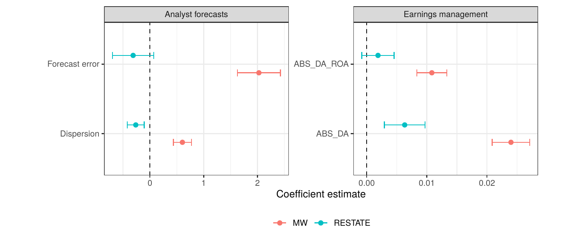
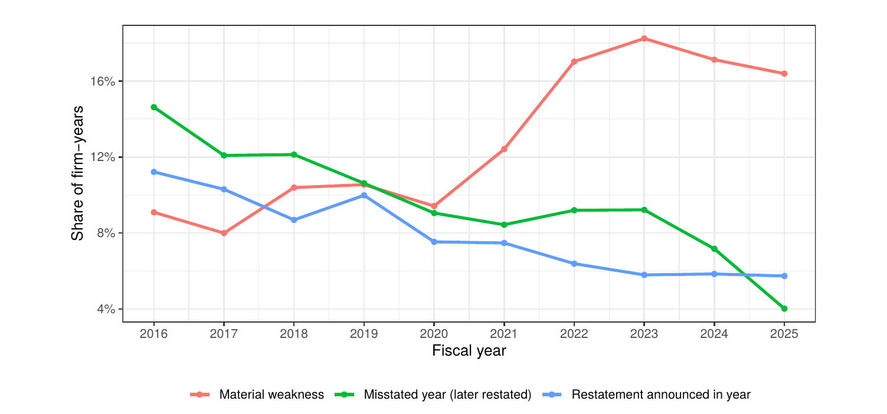

ACCT3112 Final Project · The University of Hong Kong · Luk Jay & Tong Kai Yu Ava
When a company reports a material weakness in internal control, or has to restate its accounts, something went wrong in how its numbers were made. We tested whether these firms also manage earnings more, and whether analysts find their earnings harder to predict.
| Hypothesis | Coefficient | t-stat | Result |
|---|---|---|---|
| H1 Firms with a material weakness have larger discretionary accruals | 0.024 | 15.10 | Supported |
| H2 Restated years have larger discretionary accruals | 0.006 | 3.66 | Supported |
| H3 Analysts make bigger forecast errors for material-weakness firms | 2.026 | 9.95 | Supported |
| H4 Analysts make bigger forecast errors for restated years | −0.313 | −1.59 | Not supported |
OLS with year and industry fixed effects and controls for size, leverage, market-to-book, profitability, losses, growth, cash flow and return volatility. Forecast error is measured in % of share price.
A material weakness goes together with discretionary accruals about 2.4% of total assets higher than at similar firms, roughly 28% of the average, and with forecast errors that are much larger. The effect is strongest when the weakness is reported by management only, which mostly happens at smaller firms where no auditor checks the controls. The more weaknesses a firm discloses, the larger its accruals. Restated years also show more earnings management in our main test, but analysts don't seem to have more trouble forecasting them.


All data come from Wharton Research Data Services (WRDS), downloaded directly into R. The data are licensed, so they are not included in this repository; anyone with WRDS access can rebuild them by knitting the R Markdown file.
Earnings management. For every industry and year we estimate the modified Jones model and use the absolute residual, the part of accruals that sales growth and fixed assets can't explain:
TA = α + β1(1/At−1) + β2(ΔREV − ΔREC)/At−1 + β3PPE/At−1 + ε
Forecast accuracy. Forecast error = |actual EPS − median consensus| / share price, using unadjusted I/B/E/S data so that forecasts, actuals and prices are on the same per-share basis.
In R. We used dbplyr to query WRDS, dplyr joins to link the databases, nest() + map() + lm() to run hundreds of industry-year regressions, lm() with year and industry dummies for the tests, and ggplot2 and stargazer for the figures and tables.
Robustness. The material weakness results hold in every check: a performance-adjusted accrual measure, a consensus rebuilt from individual analyst forecasts, and dropping the two most recent years. The restatement result for accruals is less robust. It gets stronger when we drop the two most recent years (t = 4.07), but becomes insignificant with the performance-adjusted measure or when restatements are dated by their announcement.
The complete report with all tables, robustness tests and the R code appendix. If it doesn't show below, open the PDF.